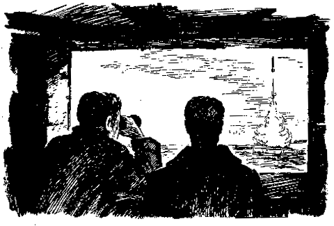

МЯГКАЯ ТАРАКАНЬЯ ЗАЧИСТКА

26 марта, когда вся страна участвовала в огромной акции под названием "Выборы президента", я принял участие совсем в другой акции. Наша цель состояла в том, чтобы мелком от тараканов очертить линию вокруг Кремля. Когда организаторы акции Бармалей и Баскет предложили мне присоединиться, я, не долго думая, согласился, поскольку считаю себя большим специалистом по тараканьей жизни. Поведение тараканов и все связанные с ними прибамбасы - мой излюбленный конек.
Мы встретились в четыре часа дня у Пушкинского музея. Народу собралось немало, лица присутствовавших были мне знакомыми, так как все они оказались посетителями нашего ПушкинГа. Здесь были художники, рэпперы, ребята из каких-то молодежных организаций, типа "Антифашистского действия", и то ли "Врачей без границ", то ли "Снижения вреда", то ли и тех и других. Честно говоря, я ни в каких организациях не разбираюсь и поэтому все названия путаю. Здесь же с двумя приятелями мы задумали совершить по ходу собственную миниакцию. Начав распивать бутылку водки в точке отсчета, мы должны были завершить ее распитие ровно в конце пути. И мы немедленно выпили. Один из нас троих, Филипп Кусакин, был хоть и с мелком, но почему-то на велосипеде, поэтому дальше перемещался сам по себе. Мы встречались с ним исключительно по наитию и тут же радостно отмечали встречу новым стаканчиком. Каждый раз он зачем-то демонстрировал свой мелок: "Мол, есть еще порох в пороховницах". Второй раз мы выпили на Большом каменном мосту. Светило солнышко, открывался прекрасный вид на Кремль, реку и набережную, и я подумал, что обе наши акции обещают быть удачными, а тараканы вряд ли сумеют преодолеть черту. Затем мы накатили на Кремлевской набережной, на Васильевском спуске и Красной площади выпить не удалось, зато в Александровском саду мы вновь охладили жабры. Последний раз мы наполнили бокалы поблизости от Боровицкой площади, там, где замкнулся круг. В этот момент меня осенила трезвая мысль, что тараканы есть не только внутри круга, но и снаружи оного. Соответственно, абсолютно не понятно, чья возьмет, когда они устремятся навстречу друг другу. Ясно, что кремлевские тараканы садче и паще, и могут одолеть всероссийских не только засчет своей жирности, но и благодаря ораторскому искусству и руководящим интонациям. С другой стороны, всероссийские тараканы, если только не предадутся всеобщему холопству, задавят кремлевских числом. С третьей стороны, встреча на Эльбе может вообще закончиться ничем, так как весьма вероятно, что тараканы погибнут не в результате столкновения, а по велению свыше, то есть из-за действия противотараканьей черты. Тут плавный ход моих мыслей был прерван появлением представителей охраны Кремля, которые задержали двоих наших ребят-граффитчиков. Представители охраны были все как на подбор в кепках, кожаных регланах, со стеклянными глазами и микрочипами в ушах. Двигались они только по команде микрочипов, поэтому вступить с ними в какие-либо переговоры не удалось. Мы помялись-потолклись у центрального входа, узнали, что ребят скоро отпустят, и разошлись по домам.
Ильяc Фалько
|